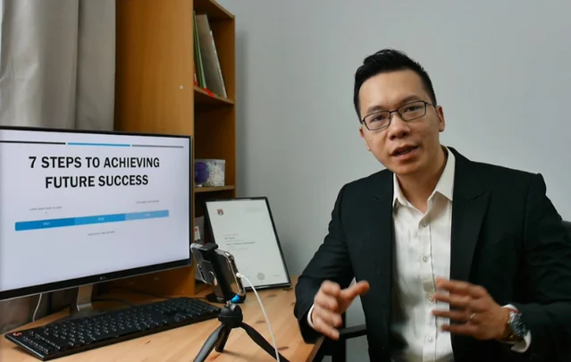

Trước 2021
Làm nghề, chưa dạy nghề
Chuyên gia marketing khối ô tô tại Honda Việt Nam. Sang Úc, đồng sáng lập một tập đoàn nhà hàng và tiệc cưới gồm bốn công ty, rồi làm giám đốc phát triển thị trường cho một công ty môi giới tài chính bất động sản.
Về Duy
Duy đi cùng nhà sáng lập biến uy tín cá nhân thành một hệ thống mà đội ngũ có thể cùng vận hành. Trang này viết đủ để bạn quyết định có nên nghe Duy hay không.
Duy làm gì
Duy làm việc với người mà khách mua vì tin ở chính họ. Với những người này, uy tín cá nhân đứng ngay trước quyết định mua, trước một hợp đồng hợp tác, và trước lời đồng ý của một nhân sự giỏi. Đó vừa là lợi thế lớn nhất, vừa là giới hạn lớn nhất.
Duy bắt đầu nghề bằng việc dạy bán hàng. Suốt năm năm, Duy làm việc với hàng nghìn người bán và nhận ra một điều lặp đi lặp lại: người chủ có thể bán rất giỏi mà doanh nghiệp vẫn kẹt, nếu nội dung, tư vấn, hệ thống và đội ngũ đều chờ họ. Vì vậy Duy chuyển trọng tâm từ đào tạo người bán sang phát triển người chủ.
Duy không rời bỏ phần bán hàng. Duy dùng chính nền tảng bán bằng niềm tin đó để giải một bài toán sâu hơn: làm sao để cách bán, cách tư vấn và cách ra quyết định của người chủ trở thành năng lực của cả đội ngũ.
Xem phương pháp Duy dùng
Đường đi
Duy để cả phần đầu, khi còn làm nghề chứ chưa dạy nghề. Vì phần lớn những gì dạy về sau đến từ giai đoạn đó.
Trước 2021
Chuyên gia marketing khối ô tô tại Honda Việt Nam. Sang Úc, đồng sáng lập một tập đoàn nhà hàng và tiệc cưới gồm bốn công ty, rồi làm giám đốc phát triển thị trường cho một công ty môi giới tài chính bất động sản.
Tháng 5 năm 2021
Facebook 0 · YouTube 0
Duy bắt tay xây thương hiệu cá nhân của chính mình, đúng thứ đang dạy người khác bây giờ, và làm khi trong tay chưa có gì.

Tháng 10 năm 2021
Facebook 60.000 · YouTube 50.000
MobiFone, AIA và KB Securities mời đào tạo nội bộ cho đội ngũ của họ. Lần đầu uy tín trên mạng đổi được thành một hợp đồng thật.
Tháng 7 năm 2022
Facebook 120.000 · YouTube 130.000 · TikTok 21.000
Hơn 500 học viên. Duy bắt đầu được mời làm diễn giả thay vì tự tổ chức lớp của Duy.
Năm năm sau
Hơn 3.000 học viên
Dạy hàng nghìn người bán hàng, Duy thấy một điều lặp lại: người chủ có thể bán rất giỏi mà doanh nghiệp vẫn kẹt, nếu nội dung, tư vấn, hệ thống và đội ngũ đều chờ họ.
Tháng 8 năm 2026
Đích tới năm 2031: 10.000 nhà sáng lập
Từ đào tạo người bán sang phát triển người chủ, với bốn năng lực làm bản đồ. Và chọn cộng đồng làm nơi luyện chính.
Học vấn và chứng chỉ
Bằng cấp không làm ai giỏi nghề. Nhưng bạn có quyền biết người mình sắp nghe đã học ở đâu ra.
Chuyên viên tư vấn triển khai chiến lược kinh doanh
Cố vấn tài chính tín dụng, làm việc với hơn mười lăm ngân hàng và tổ chức tài chính
Chuyên viên tư vấn chiến lược doanh nghiệp
Thạc sĩ Quản trị Kinh doanh, khoá xếp hạng 60 thế giới
Cử nhân Kinh tế Đối ngoại
4 điều Duy tin
Đọc bốn điều này, bạn biết ngay chúng ta có cùng cách nghĩ hay không, trước khi mất thời gian của cả hai.
Nổi tiếng là nhiều người biết tên bạn. Được tin cậy là đúng người hiểu bạn làm gì, tin bạn làm được và chủ động tìm tới. Duy làm việc cho vế thứ hai.
Nếu mọi nội dung, giao dịch lớn và quyết định quan trọng đều chờ người chủ, doanh thu tăng chỉ làm họ bận hơn. Nút thắt đó không tự gỡ.
Kết quả không thể chỉ nằm trong trí nhớ và sự đôn đốc của người chủ. Một hệ thống cần kết quả rõ, người chịu trách nhiệm, tiêu chuẩn, dữ liệu và một nhịp cải tiến.
Cộng đồng không phải nhóm đăng bài. Giá trị phải được tạo giữa các thành viên với nhau, không chỉ chảy một chiều từ người sáng lập xuống.
3 người Duy hay ngồi cùng
Bạn giỏi việc của mình và khách tìm tới vì tên bạn. Nhưng thu nhập vẫn buộc chặt vào số giờ bạn ngồi xuống làm.
Đã có khách, có doanh thu, có đội ngũ. Nhưng giao dịch lớn, ngoại lệ và quyết định quan trọng vẫn quay về bàn của bạn.
Bạn chịu trách nhiệm cho kết quả của người khác. Bạn cần uy tín đủ để người giỏi tin và ở lại đủ lâu.
Người chưa có khách trả tiền, người đang tìm cách tăng nhanh lượt xem, và người muốn Duy làm thay phần việc của mình. Ba nhóm này Duy nói thẳng ngay từ đầu để không ai mất thời gian, của bạn và của Duy.
Cách Duy làm việc
Người cố vấn không phải là chức danh tự đặt. Nó là năm việc phải làm được. Bạn có quyền lấy năm điều này ra kiểm Duy.
Mỗi lần làm việc phải đi đủ năm bước, không bỏ bước nào.
Duy giúp bạn tách điều đang thấy khỏi vấn đề thật phía sau, bắt đầu từ những gì quan sát được chứ không từ cảm giác. Chưa gọi đúng tên vấn đề thì Duy chưa vội đưa công cụ.
Duy cho bạn thấy mình đang ở đâu, bước tiếp theo là gì, và điều gì chưa cần làm lúc này. Một bước vừa sức với chỗ bạn đang đứng, không phải một danh sách mẹo.
Duy đưa ra quyết định thật, tài liệu thật, và cả những sai lầm đã trả giá của chính mình, kèm điều kiện áp dụng. Có việc Duy vẫn đang làm dở, và sẽ nói với bạn đúng như vậy.
Duy nói rõ điều gì đủ, điều gì chưa, và cái giá của việc tiếp tục cách cũ. Sức nặng nằm ở lý do và ranh giới, không nằm ở giọng nói. Duy không làm nhẹ sự thật để bạn dễ chịu, nhưng cũng không để bạn một mình sau khi nghe.
Duy ở bên trong lúc bạn tập cách làm mới, rồi để lại một tiêu chí bạn tự đánh giá được và một câu hỏi còn dùng được lâu sau đó. Đích đến là bạn tự đi được, không phải bạn cần Duy mãi.
Ranh giới này giữ cho việc đồng hành không biến thành sự lệ thuộc.
Không làm thay phần việc của bạn. Duy chỉ đường và giữ chuẩn, bạn tự bước.
Không hứa một con số doanh thu khi chưa đủ điều kiện.
Không giữ ai ở lại bằng cảm giác lệ thuộc.
Nếu bạn chỉ đi được khi có Duy, Duy đã làm sai việc của mình.
Số công khai
Duy để số ở đây, và nói luôn giới hạn của nó.
334.000theo dõi
YouTube
230.000đăng ký
TikTok
231.000theo dõi
Zalo
22.000theo dõi
Tính tới tháng 8 năm 2026, đọc từ trang công khai của từng kênh.
Nó nói Duy có mặt đủ lâu và đủ đều để bạn kiểm chứng, không nói Duy giúp được bạn. Câu đó chỉ có bằng chứng trong chính doanh nghiệp của bạn mới trả lời được, và đó là điều Duy cùng bạn đi tìm.
Bước tiếp theo
Không phải bằng một quyết định lớn. Ba lối dưới đây đều là một việc như vậy, đủ nhỏ để làm xong trong tuần này. Bạn cứ đi chậm cũng được, Duy không giục ai.
Nơi nhà sáng lập luyện bốn năng lực trong công việc thật, có nhịp, có phản hồi, và có người hiểu chuyện mình đang gặp ở bên cạnh. Điền biểu mẫu hai phút, đội ngũ Next Gen Founder sẽ trao đổi để xem bạn có hợp không. Nếu chưa phải lúc, Duy và đội ngũ sẽ chỉ bạn bước hợp hơn.
Đăng ký danh sách chờMỗi tuần một lá thư ngắn: một điểm nghẽn thật của người sáng lập, cách Duy nhìn nó, và một bước bạn làm được ngay trong tuần. Không quảng cáo, không bán hàng trong thư.
Cảm ơn bạn. Ứng dụng thư vừa mở với nội dung soạn sẵn, bấm Gửi là xong.
Địa chỉ thư chưa đúng. Bạn kiểm lại giúp Duy.
Chưa rõ mình đang kẹt ở đâu thì làm phiếu chẩn đoán bảy phút trước. Muốn mời nói chuyện, hợp tác truyền thông hay hỏi về cố vấn riêng thì vào trang liên hệ, ở đó có đúng bốn cửa.
Xem cách liên hệ